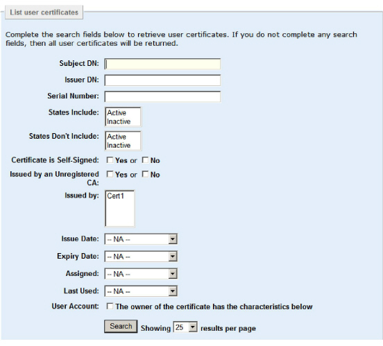
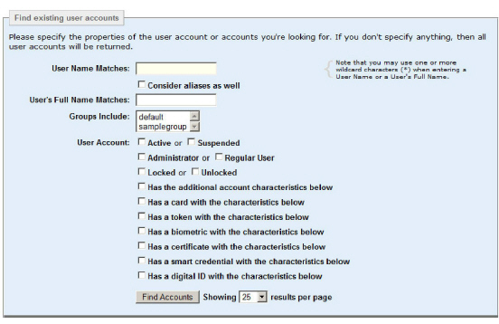
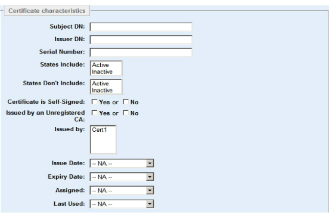
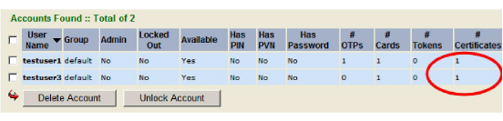

|
IdentityGuard Server 11.0 Administration Guide |
|
IdentityGuard Server 11.0 Administration Guide |
You can find specific user certificates, or you can find users by their certificate information.
To find user certificates
1. Log in to the Administration interface (Logging in and out of the Administration interface).
2. Click Certificates.
The List user certificates screen appears.

3. You can specify any or all of the search criteria to search for user certificates with specific characteristics.
a To search by subject DN, enter the DN in Subject DN.
a. To search by issuer DN, enter the DN in Issuer DN.
b. To search by the certificate serial number, enter the serial number in Serial Number. Wild card characters are allowed.
c. To search for only active or only inactive user certificates, select Active or Inactive in the States Include list box.
d. To find certificates belonging to users who have no certificates in a specific state, select the state from the States Don’t Include list. Hold down the Ctrl key to select more than one state.
e. To search on whether the certificate is self-signed, select Yes or No beside Certificate is Self-Signed.
f. To search on whether the certificate was issued by an unregistered CA, select Yes or No beside Issued by an Unregistered CA.
g. To search for certificates issued by specific CAs, select the desired CA from the Issued by list box.
h. To search by issue date, expiry date, assigned date, or last used date, select the time range from the corresponding drop-down menus. If you select Custom date range, you can choose specific dates using the date selectors or the calendar icons.
Note: When searching on Last Used date using the custom date range, if a start date is specified, then the search will not list certificates that have never been used. If a start date is not specified for the search, the search list includes certificates that have never been used.
4. Click Search.
To find users by their certificate information
5. Log in to the Entrust IdentityGuard Administration interface as the administrator.
 On the
Windows computer where Entrust IdentityGuard is installed
On the
Windows computer where Entrust IdentityGuard is installed
2. Click User Accounts.
3. Click Find Accounts.
The Find existing user accounts screen appears.

4. Select Has a certificate with the characteristics below.
The Certificate characteristics pane appears.

5. Enter the search information.
6. Click Find Accounts.
7. If there are accounts matching the certificate criteria you entered, a Search Results screen appears.
